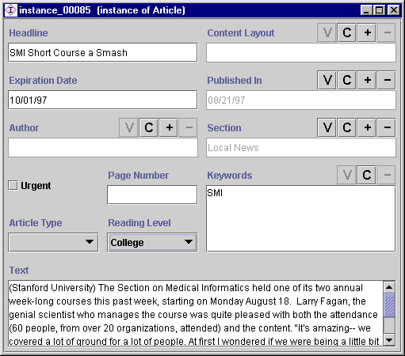

The Instances form can be used to define and edit the slot attributes of
the instance selected in the Direct Instances pane. If a single class is selected, the
Instances form is displayed
at the right of
the Instances tab. The Instances form is also displayed separately
in a free-standing window whenever you click on the View  Instance button in the Direct Instances pane. Whenever you enter changes into the
Instances form, they take effect
immediately. To make the changes permanent, select Save from the Project menu.
Instance button in the Direct Instances pane. Whenever you enter changes into the
Instances form, they take effect
immediately. To make the changes permanent, select Save from the Project menu.

For each slot in the instance, the Instances Form displays a field where you can enter the information for that slot. The display and options for the field depend on the type of information that is included in the field.
Next: The Field Buttons